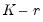

A fundamental prerequisite of VECM estimation is a priori knowledge of the number of cointegrating relations

. Accordingly, we consider formal methods for determining the cointegrating rank using Johansen cointegration tests.
Equation (59.1) assumes that there are stochastic trends but no deterministics and exogenous variables in the specification. However, your series may have nonzero means and deterministic trends, or may depend on exogenous variables.
The page prompts you for information about the test.
The test dialog allows you to specify the , to identify any as either , , or , to specify the , and to select the method of obtaining .
You should specify the lags of the test VAR as pairs of intervals. Note that the lags are specified as lags of the first differenced terms used in the differenced test regression, not in terms of the levels.
For example, if you type “1 2” in the edit field, the test VAR regresses

on , , and any other exogenous variables that you have specified. Note that in terms of the level series

the largest lag is 3. To run a cointegration test with one lag in the
level series, type “
0 0” in the edit field.
Keep in mind that the exogenous variables entered in the test dialog refer to short-run variables added to the VEC difference specification Equation (45.41). This treatment is in contrast to that of the built-in deterministic trends which are specified in terms of the levels equation. For example, one of the most commonly added exogenous variables are seasonal dummy variables. Note, however, that if you include 0–1 seasonal dummy variables in the test specification, this will affect both the mean and the trend of the level series

. To handle this problem, Johansen (1995, page 84) suggests using centered (orthogonalized) seasonal dummy variables, which shift the mean without contributing to the trend. Centered seasonal dummy variables for quarterly and monthly series can be generated by the commands:
You may use the dropdown menu in the d Specification section to choose one of these assumptions. Alternately, you may select the checkbox to construct a summary of cointegration tests for all of the deterministic specifications.
By default, EViews will compute the critical values for the test using MacKinnon-Haug-Michelis (MHM, 1999) p-values. By default, EViews will compute the critical values for the test using MHM, but you may elect instead to report the Osterwald-Lenum (OL, 1992) at the 5% and 1% levels by changing the radio button selection from to .
We may perform Johansen cointegration testing and rank determination using the example workfile “var1.WF1”, located under the “Vector Autoregression (VAR) Models” folder. This is a workfile with a number of classic macroeconomic variables including gross domestic product, various measure of money supply, treasury bills of different maturations, industrial production, producer price index, the unemployment.
Click on to perform the test. The output is a spool object with 4 tables:
The first table is a of the estimation specifications under which the cointegration rank test is conducted.
Following the summary is a table showing Johansen cointegration tests based on the trace and maximum eigenvalue statistics. The trace statistic reported in the first block tests the null hypothesis of at most

cointegrating relations against the alternative of

cointegrating relations, where

is the number of endogenous variables. The maximum eigenvalue statistics tests the null hypothesis of

cointegrating relations against the alternative of cointegrating relations.
The next node contains the table which provides estimates of the cointegrating vector

and the adjustment parameters

. As is well known, the cointegrating vector

is not identified unless we provide an arbitrary normalization. This table reports estimates of

and

under the normalization where

is defined in
Equation (45.22). Note that the transpose of

is reported in the table so that the first row is the first cointegrating vector, the second row is the second cointegrating vector, and so on.
The final node contains the table which reports estimates from a different normalization for each possible number of cointegrating relations. This alternative normalization expresses the first

variables as functions of the remaining  variables in the system. Asymptotic standard errors are reported in parentheses for the parameters that are identified.


denotes the maximized value of the Gaussian likelihood function for cointegration rank
, and are the eigenvalues associated with the relevant symmetric matrix given in Equation (45.23).
and . (“Estimating VECM with Deterministics”).
 endogenous variables and no deterministic terms,
endogenous variables and no deterministic terms,  has rank for
has rank for  , then there exist matrices
, then there exist matrices  and
and  each with rank
each with rank  such that
such that  .
. :
:  versus
versus  :
:  versus
versus  :
:  . If a test rejects, increase the null by one and repeat the test. The estimated cointegration rank is then the first (minimum)
. If a test rejects, increase the null by one and repeat the test. The estimated cointegration rank is then the first (minimum)  for which the test fails to reject the null.
for which the test fails to reject the null. matrix has full rank (). This apparent contradiction may be the result of low power of the cointegration tests, stemming perhaps from a small sample size or serving as an indication of specification error.
matrix has full rank (). This apparent contradiction may be the result of low power of the cointegration tests, stemming perhaps from a small sample size or serving as an indication of specification error. and month
and month  , respectively.
, respectively. distribution and depends on the assumptions made with respect to deterministic trends. To carry out the test, you need to make an assumption regarding the trend underlying your data.
distribution and depends on the assumptions made with respect to deterministic trends. To carry out the test, you need to make an assumption regarding the trend underlying your data. distribution and depends on the assumptions made with respect to deterministic trends.
distribution and depends on the assumptions made with respect to deterministic trends. by one and repeat the test. The estimated cointegration rank is then the first (minimum)
by one and repeat the test. The estimated cointegration rank is then the first (minimum)  for which the test fails to reject the null. In this case, we reject all three null hypotheses at conventional significance levels, and conclude that there are 3 cointegrating equations.
for which the test fails to reject the null. In this case, we reject all three null hypotheses at conventional significance levels, and conclude that there are 3 cointegrating equations.